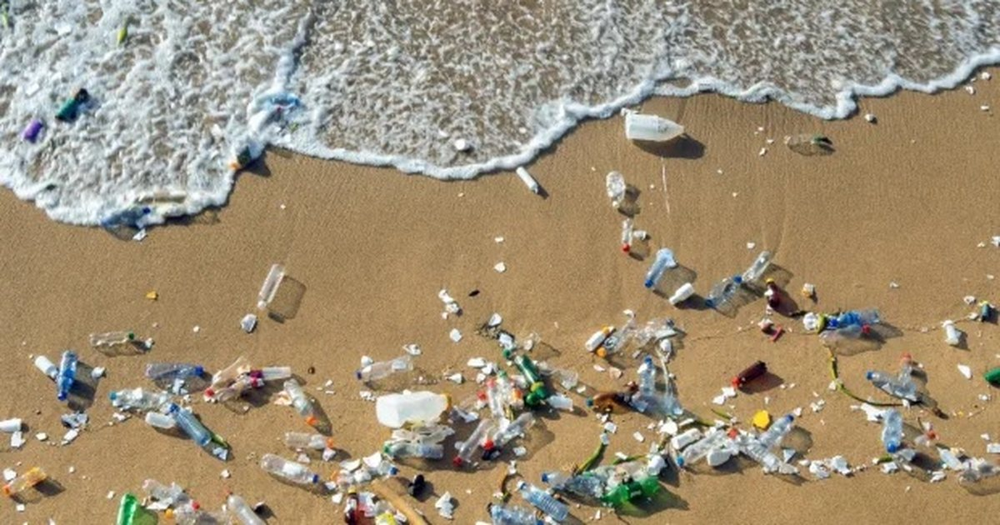

Kompania jonë mbështetet gjithmonë në krijimin e një eksperience të paharrueshme për të tjerët,
pasi fokusohemi tek përvoja si prioritetin tonë kryesor.
duam që ju të keni përvojën më të mirë të mundshme në faqet tona të internetit dhe produkteve tona te ardhshem.
Shpresojmë që kjo faqe të tregojë se çfarë jemi të aftë të realizojmë edhe me produkte te tjera.
Pse shishet e ujit termus janë një zgjedhje e shkëlqyer?
Në jetën e përditshme, hidratimi është thelbësor për shëndetin dhe energjinë tonë. Prandaj, mënyra si mbajmë dhe transportojmë ujin ka një rëndësi të veçantë. Shishet e ujit termus janë një nga zgjidhjet më të mira që mund të zgjedhim për shumë arsye praktike dhe funksionale.
Së pari, këto lloj shishesh janë të dizajnuara për të ruajtur temperaturën e lëngjeve për një kohë të gjatë. Qoftë një ditë e nxehtë vere apo një mëngjes i ftohtë dimri, shishet termus sigurojnë që uji, çaji apo kafeja jonë të mbeten në temperaturën e dëshiruar për orë të tëra. Ky izolim i shkëlqyer është i mundur falë teknologjisë së avancuar me dy shtresa dhe vakumin mes tyre, i cili parandalon shkëmbimin e nxehtësisë me ambientin.
Së dyti, shishet termus janë jashtëzakonisht të qëndrueshme dhe ekologjike. Ato janë ndërtuar nga materiale cilësore si çeliku inoksidues, që jo vetëm që zgjasin për vite të tëra, por edhe ndihmojnë në reduktimin e përdorimit të plastikës njëpërdorimëshe. Duke përdorur një shishe termus, jo vetëm që kursejmë para, por kontribuojmë edhe në mbrojtjen e mjedisit.
Një tjetër avantazh i madh është dizajni praktik dhe estetik. Shishet termus vijnë në shumë ngjyra dhe forma të ndryshme, duke i bërë ato jo vetëm funksionale, por edhe një aksesor të bukur që përshtatet me stilin personal. Janë të lehta për t'u mbajtur në çantë, të përshtatshme për palestër, shkollë, punë apo udhëtime.
Në përfundim, shishet e ujit termus janë një investim i mençur për këdo që vlerëson cilësinë, komoditetin dhe kujdesin për mjedisin. Ato kombinojnë teknologjinë, elegancën dhe funksionalitetin në një produkt të vetëm, duke na bërë jetën më të lehtë dhe më të shëndetshme.
Shishet termus ndihmojnë në ndalimin e ndotjes së ujit kryesisht duke reduktuar përdorimin e shisheve plastike njëpërdorimëshe. Kur njerëzit përdorin një shishe termus që e mbushin vazhdimisht, kanë më pak nevojë të blejnë ujë në shishe plastike, të cilat shpesh përfundojnë në natyrë ose në det. Kjo ul ndjeshëm ndotjen e burimeve ujore si lumenjtë, liqenet dhe oqeanet.
Gjithashtu:
Reduktohet prodhimi i plastikës, që zakonisht çliron kimikate të dëmshme në ujë gjatë procesit të riciklimit ose kur digjet.
Promovohet një kulturë më e ndërgjegjshme për mjedisin, duke nxitur njerëzit të kujdesen më shumë për natyrën dhe ujin që konsumojnë.

!Gjithashtu përfitoni ofertën speciale! Vetëm për 200 blerjet e para keshtu qe reagohuni shpejt
dhe mos harro ruaj freskinë, mbro natyrën dhe zgjidh termusin që udhëton me ty kudo!
Blini tani mos harxhoni kohe me teper